Компоненты лингвистической прозы
Уважаемые студенты!
Здесь собраны методические указания для успешного выполнения компонента выявления умений строить компоненты лингвистической модели подъязыка деловой прозы в Научной лаборатории ИСиТ НИЯУ МИФИ.
| Часть речи | Нормальная каноническая форма (НКФ) |
|---|---|
| Существительное | Именительный падеж единственного числа |
| Местоимение | 1-е лицо единственного и множественного числа |
| Глагол | Инфинитив |
| Причастие | Инфинитив исходного глагола |
| Деепричастие | Инфинитив исходного глагола |
| Прилагательное (полное и краткое) | Именительный падеж единственного числа мужского рода |
| Отглагольное существительное (имена действий) | Инфинитив исходного глагола |
| Отглагольное прилашательное (имена действий) | Инфинитив исходного глагола |
| Отадъективное существительное (имена свойств) | Именительный падеж единственного числа мужского рода исходного прилагательного |
| Качественное наречие | Именительный падеж единственного числа мужского рода исходного прилагательного |
| Порядковое числительное | Именительный падеж единственного числа мужского рода исходного числительного |
| Качественное числительное | Именительный падеж |
| Тип связи | Компоненты предложения, между которыми осуществляется данная связь | Разновидность связи и ее обозначение |
|---|---|---|
| Глубинный падеж (семантическая валентность) | Предикаты -> аргументы |
A — быть «агентом» действияO — быть «объектом» действияD — быть «адресатом» действияT — быть «темой» действияI — быть «инструментом» действияL — быть «местом» действияS — быть «начальной точкой» действияF — быть «конечной точкой» действияG — быть «целью» действияC — быть «условием» действияW — быть «временем» действияM — быть «способом» действияB — быть «сроком» действияX — быть «количеством» действияR — быть «результатом» действияK — быть «контрагентом» действия |
| Необязательная валентность (характеристика предиката) | Предикат -> распространители | Грамматические связи типа: «обстоятельство места» (L) «обстоятельство времени» (W) «обстоятельство цели» (G) «обстоятельство причины» (C) «обстоятельство образа действия» (M) |
| Атрибутивная связь (характеризация понятия и характеризация свойства) | Существительное -> прилашательное |
Определимая связь (H)
|
| Количественное числительное -> существительное и др. |
Количественная связь (H)
|
|
| Существительное -> существительное |
Притяжательная связь (H)
|
|
| Отадъективное существительное -> существительное |
Притяжательная связь (H)
|
|
| Существительное -> предлог -> существительное |
Притяжательная связь (H)
|
|
| Существительное -> нарицательное существительное |
Именная связь (H)
|
|
| Наречие -> прилагательное и др. |
Модификационная связь (M)
|
|
| Генетивная связь «часть-целое» | Существительное -> существительное | P |
| Связь типа «быть подмножеством» | Существительное -> существительное | U |
| Связь типа «быть элементом» | Существительное -> существительное | E |
Источник: Рыбина Г.В. Основы построения интеллектуальных систем. Учебное пособие. – М.: Финансы и статистика; ИНФРА‑М, 2010. – 432с.
Введение
Лабораторная работа состоит из трех компонентов - G , V, S. Компоненты выполняются в представленном ранее порядке. Каждый из компонентов оценивается отдельно, после чего вычисляется итоговая оценка, хочется отметить, что выполнение каждого из компонентов займет у вас не малое количество времени.
Обращаем ваше внимание на то, что данная лабораторная работа ограничена по времени 2 часами.
После успешной авторизации по логинам и паролям предоставленными инженерами лаборатории перед вами откроется окно навигации.

Далее нажимая на ссылку Лингвистика перед вами откроется окно выбора варианта.
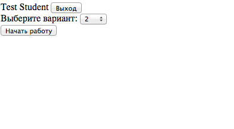
Указывайте вариант выданный сотрудниками лаборатории, в случае неудачной попыпки сдачи одного из компонентов результаты сохраняются в базе и в следующий раз вы сможете пересдать какой-либо компонент только под вашим вариантом.
После выбора своего варианта нажимайте на кнопку Начать работу
Сценарий лабораторной работы
Перед вами откроется окно с заданием компонента G. Ознакомьтесь с интерфейсом. В правом верхнем углу находится краткая справка.
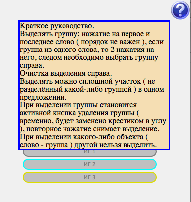
После того как вы ознакомитесь с интерфейсом и заданием приступайте к выполнению. Необходимо произвести анализ предложений и обозначить в них основные и именные группы если такие имеются.
На панели справа располагается список основных и именных групп. После выделения группы слов необходимо присвоить им соответствущую группу. Для добавления новой именной группы нужно нажать на кнопку Добавить ИГ, после новую именную группу можно связать с группой слов в предложения.
Будьте внимательны, не создавайте лишних именных групп. Одну именную группу можно использовать в разных предложениях одновременно.

В ходе выполнения работы у вас должны быть задействованы все слова в предложении. Лучше начинать с основных групп после чего создавать новые именные группы.
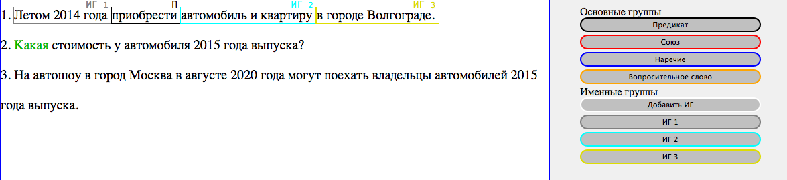
Если в ходе работы вы поняли, что совершили ошибку, то возможно отменить присвоенную вами именную группу. Для этого нужно выделить ошибочную именную группу и нажать на крестик.
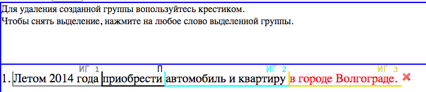
После того как все слова в каждом из предложений будут задействованы у вас получится такая картинка. Можете переходить ко второй части выполнения компонента G.

Вам необходимо описать модель компонента G в БНФ.
Будьте внимательны, порядок описания не важен.
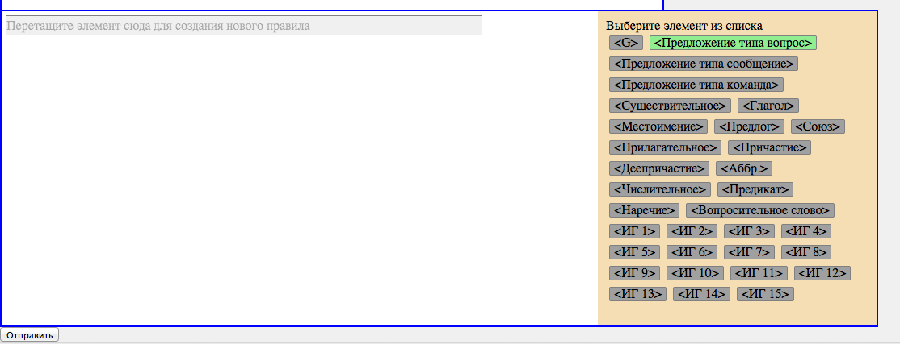
Покажем на примере описания предложения типа вопрос. В данном примере наше предложение состоит из именной группы 1, предиката, именной группы 2 и именной группы 3.
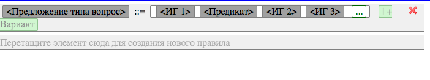
Необходимо описать все возможные варианты каждого из типов предложений пока будет сохранятся смысл и выполнятся правила русского языка.
Для того чтобы сделать это необходимо перетаскивать первый элемент нового варианта на кнопку + Вариант. Таким образом, новый вариант будет разделен с предыдущим вертикальной чертой |.
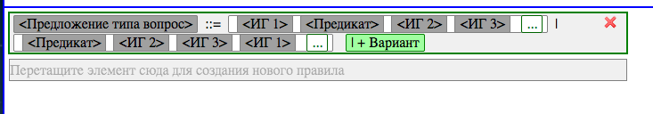
Следующим шагом будет описание именных групп, приведем пример.
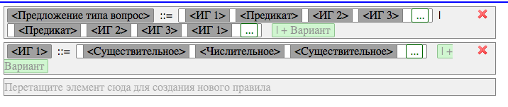
Обратите внимание! У вас не должно быть именных групп с разным название и одинаковым описанием.
Нажимем кнопку Отправить и переходим к выполнению к следующему компоненту V.
Вам необходмо описать словари, используемые для хранения словоформ текса подъязыка деловой прозы.
Порядок описания также не важен.
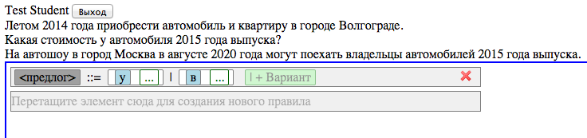
После описания всех словарей переходите к компоненту S. Для этого нужно нажать кнопку Готово.
Для выполнения компонента S необходимо знать теоретическую часть и иметь представление о языке CAREL.
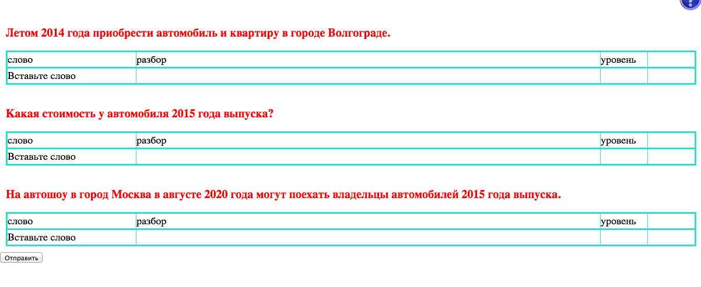
Вам необходимо перетащить нужные по вашему мнению слова на валентные места и верно указать их модальность. Покажем на примере предиката из первого предложения.
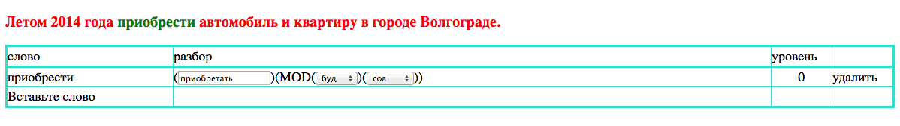
Обратите внимание на форму слова находящуюся на валентном месте. А также на уровень, на котором находятся вабранное слово.
Регулировать уровень можно с помощью стрелок < и >.
После завершения компонента S нужно нажать на кнопку Отправить. Система покажет ваши результаты и выведет ошибки, если таковые имеются, а также автоматических подсчитает итоговую оценку.